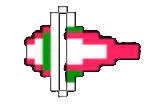
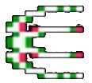
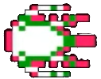

YleistaikaPelin ensimmäinen taika, jonka voi ostaa eri varustekaupoista. Taialla voi myös osua mataliin peikkoihin |
 |
|---|---|
Tuli1,5 verran vahvempi taika verrattuna yleistaikaan mutta myös kuluttaa enemmän pelin taikamittaria |
 |
Ukkonen4 kertaa vahvempi taika kuin yleistaika mutta kuluttaa entistä enemmän taikamittaria |
 |